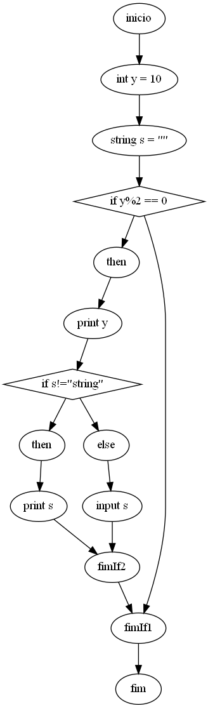
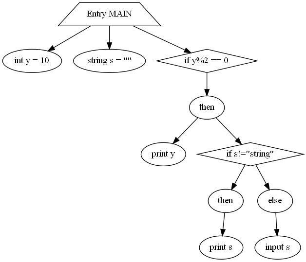

Variáveis declaradas e os seus tipos
| Variável |
Tipo |
| x |
int |
| s |
string |
| l |
list |
Outras informações sobre as variáveis
- Variáveis sem inicialização: {'s'}
- Variáveis não declaradas: Nenhuma
- Variáveis redeclaradas: Nenhuma
- Variáveis usadas e não inicializadas: Nenhuma
- Variáveis declaradas mas nunca mencionadas: {'s'}
Informações sobre as instruções
- Total de instruções: 11
- Total de atribuições: 3
- Total de leituras: 0
- Total de escritas: 5
- Total de instruções condicionais: 2
- Total de instruções cíclicas: 1
- Total de situações de aninhamento: 2
Informações sobre os ifs e os seus aninhamentos
Níveis de aninhamento dos ifs
- Nível 0: Ifs pela ordem em que aparecem no código - [1, 2]
Grafos gerados durante a análise estática
Control Flow Graph

System Dependency Graph (lite)

Complexidade de McCabe do grafo CFG
E(Nº arestas) - V(Nº nós) + 2 = 4